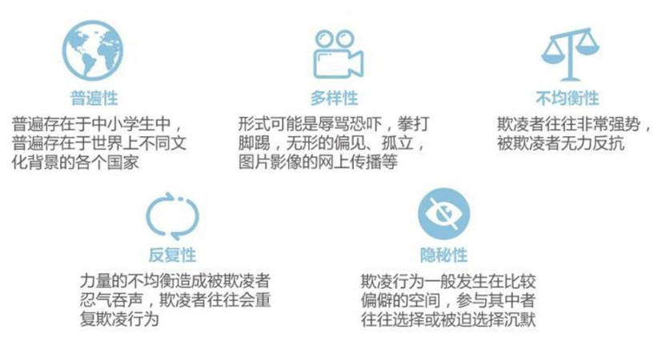

2020年5月7日下午6时许，江苏南通的葛女士突然接到班主任打来的电话称，她15岁儿子小逸出事。经检查，小逸由于伤势过重，被宣布脑死亡,经过两天抢救，最终不幸去世。
小逸听话又懂事，但却在开学没几天后向自己提出休学的想法，葛女士从儿子手机聊天记录中看到范某发送的“你等着被我打死”等字样，她这才知道儿子突然不想上学是因为受到了范某的“死亡威胁”。
2020年5月6日晚，范某在微信群表示欲教训该校初一年级某男生，在小逸劝说无效后，将此事告知了两人的朋友胡某，引起胡某对范某的不满，范某遂对小逸怀恨在心欲予报复。
2020年5月7日下午5时许，范某伙同小混混蔡某将小逸带往偏僻的小树林进行殴打，还找来了4名同学前去围观，并让他们拍摄下殴打视频。
案发后，小逸所在的学校只表示小逸当天没有来学校，对其他情况一无所知。经派出所出面和学校领导协商后，出于人道主义，学校给了葛女士三万元后便表示事情与学校无关。班主任在双方家属之间也并未进行沟通，协调赔偿事宜等工作。加之范某和蔡某被刑拘后迟迟没有被法律裁决，葛女士决定用互联网平台推动案件的解决，她将昵称改为“心碎的母亲”，在抖音、微博、微信等平台上发布小逸的遇害经历， 引发了大量关注。
经网络舆论的持续发酵，2021年1月18日，该案开庭审理，但未当庭宣判。两名凶手承认了犯罪事实，也表达了道歉，但在葛女士看来，“对不起三个字很淡漠，就像背书一样，没有任何感情色彩”。
最终，蔡某因犯故意伤害罪被判无期徒刑，范某因案发时未成年，以犯故意伤害罪被判有期徒刑14年。但对于这一结果，葛女士并不满意，“未成年人（范某）被判14年，还是出乎我的意料，不太能接受”。
小逸本应精彩的人生永远停留在了15岁，只留下悲伤欲绝的母亲，而小逸只是千万遭受校园欺凌的不幸者的一员。
校园欺凌案件主要集中在河南、贵州、山东等地。而北京、上海等人口密集地区校园欺凌案件量相对较少。
除了河南省和山东省未成年人犯罪案件数与其全省常住人口规模呈现较高对应关系外，贵州省的未成年人犯罪案例数，显著高于其常住人口规模下的平均水平。
对比发案比例，发案量全国前三的贵州省仍位于全国前五的阵营之中，而河南省和山东省的发案比例则基本与其人口规模相对应。我们发现，新疆、宁夏、青海三省，未成年人犯罪比例同样较高。
学生欺凌问题突出表现在10～14或15岁左右的学生群体中，在此年龄阶段，学生被欺凌和欺凌他人的比例均较高，在约14或15岁之后，学生欺凌问题相对缓解。
在事件施暴者的调查上，81.82%的受害者表示施暴方为群体，18.18%的受害者表示施暴方为个人。群体引发的校园欺凌事件危险性远大于个体之和，受害者所受欺凌程度也随之增强。
过半的起因来自于日常的琐事。日常小矛盾的不及时处理与累计，慢慢地将会引发难以估量的后果。因为未成年人对于金钱和情感还未形成正确与成熟的价值观念，所以在钱财与情感纠纷上，也出现了较大比例的校园欺凌案件发生。
被欺凌者性格特征大多内向、胆怯，倾向于忍耐，没有自己的立场。对他们来说，如果超过半年时间被欺凌而没有得到有效干预，其人格发展将遭到破坏性的影响。被欺凌者往往比较自卑、容易产生焦虑，容易神经过敏。但也有其他类型，例如特立独行，有区别于他人的明显风格。或是本身就患有心理疾病，不合群，性格较为孤僻。亦或是口无遮拦、容易得罪人……
而在霸凌者和被霸凌者之间，两者的位置常常会互换，也就是说被霸凌者在特定情况下也会转变为霸凌者而向他人实施霸凌。
家长和老师，更重要的是帮助学生摆脱“欺凌”这个怪圈，真正从根本上解决问题。
在校园欺凌中，更多的是以言语为中心展开的一系列欺凌行为。软暴力的伤害不是肉眼可及的身体，而是被欺凌者内心深处的敏感点。这种行为相较于肉体欺凌行为，会对被欺凌者造成更深刻更持久的隐性伤害。
在校园欺凌的案发地超过三成在宿舍，这是一个相较于学校的其他地方，老师管理度更低、学生自由度更高的场所。同样的，在厕所与走廊楼道等管理度较低的区域，也是案件的高发地。而在教室中，因为学生的交流与接触更加频繁，所以案发量占比也是较高的。
遭遇欺凌后，不曾选择求助的学生占比近五成。52.6%的学生认为，遭遇欺凌而不报告的主要原因是“怕丢脸面，在同学中抬不起头”。青少年时期，自尊心的维护感非常强烈，加上思维不成熟，在成人并不在意的事情上，他们可能非常在意，这一定程度上使得他们在需要外界援助的时候，迫于“面子”而选择默默忍受。
32.95%的受害者在校园欺凌事件发生后被确诊患有心理疾病。在上表显示，却仅有不到四成的受害者曾对心理问题进行过咨询。可见，有相当部分受害者没有得到过及时科学的治疗，甚至可能对疾病毫不知情。
高达63.63%的受害者未曾寻求心理咨询师的帮助。
大多数人认为只有肢体冲突才能够被称为校园欺凌。可言语羞辱、造谣中伤、情感虐待、社交孤立……这些“软暴力”，其实比“硬暴力”更可怕，更常见。校园软暴力发生后，有近93%的受害者会受到明显的影响。其中41%的人会因此放弃自己的学业，甚至选择走向自我毁灭。吃瓜群众却说“小孩子的心里太脆弱了”，转头将罪责归咎于受害者。而施暴者云淡风轻：“只是开个玩笑嘛”，将欺凌一笔带过，这样的不对等，酿成了接二连三的悲剧。
根据施暴时常的数据显示，有近五成的受害者遭受了1到5年的欺凌时间。在未成年人短暂的成长、学习时间中，每一年都显得尤为珍贵，而长期的欺凌行为，深刻影响了未成年人的整个成长环境，甚至影响到受害者未来的发展轨迹。

“孩子的行为都是心理的投射，校园欺凌‘冰山’下的97%都没有被看见。”安徽省合肥市青少年心理研究会会长林林认为，心理学最大的特性是滞后性，可能是几年前的问题导致几年后的欺凌事件。
而面对已经普遍存在于各国家、各地区、各年龄的校园欺凌案件，有形或无形的各种各样的欺凌形式与对受害者反复的、愈演愈烈的欺凌行为，大多都掩藏在公众的视角之下。那些令我们愤懑不平的已经报道出来的案件，其实只是冰山中的小小一角，甚至这就是你身边许多默默无闻的人当下的处境与生活状态。
部分老师不够重视学生之间的人际关系与冲突，总是轻视孩子之间的小打小闹，纵容事件的愈演愈烈。而对于想要处理相关事件的老师，又缺少了相应的方法与权利。教师虽有一定的惩戒权，但对于具体的欺凌行为定义及惩处仍有待完善。学校应当就相关问题对老师进行专业化的培训。
而部分父母往往忙于工作，对于子女的关心只停留在学习成绩上。他们作为父母的失职行为，导致孩子没有树立正确的道德观念，易成为施暴者。
家长的处理方式呈现三种倾向，第一类“不作为”的家长，占到35.23%，第二类“有作为”的家长，占到了32.95%。第三类家长则毫不知情，未能处理。
找到预防校园欺凌发生的方式是学校需要重视的工作。校园欺凌发生隐蔽、难以察觉。由开始的矛盾到欺凌行为发生往往有一段时间。学校如果能在欺凌的矛盾阶段及时发现、调解，那么便很容易化解一场欺凌危机，防止悲剧的产生。
校方要重视事后处理，获取信任。学校对每件校园欺凌事件的处理都会引起学生、家长，乃至社会的广泛与持续关注，正确的处理方式往往能遏制校园欺凌于无形，而错误的处理方式往往会助长欺凌者的气焰。校方应协同家长，一同从根本上解决欺凌问题，防止“二次欺凌”，或是该事件引发的其他附带问题。

国务院教育督导委员会发布《关于开展校园欺凌专项治理的通知》，在国家层面第一次提出防治校园欺凌。
教育部联合公安部、民政部等十一个部门联合发布《加强中小学生欺凌综合治理方案》，首次以规范性文件的形式界定了中小学校园欺凌的概念。
国务院教育督导委员会办公室印发《关于开展中小学生欺凌防治落实年行动的通知》，要求各地各校明确学生欺凌防治工作机构、办公电话和实施方案，细化实施学生欺凌防治各项措施。
发布《关于建立未成年案件强制报告制度的意见(试行》且新修《未保法》，对强制报告制度进行了吸收，将强制报告确定为法律义务。
刑法修正案（十一）正式施行，将刑事责任最低年龄从14岁降到了12岁——已满12周岁不满14周岁的人，情节恶劣，经最高人民检察院核准追诉的，应当负刑事责任。
《未成年人保护法》首次对“学生欺凌”进行了定义：殴打、脚踢、掌掴、抓咬、推撞、拉扯等侵犯身体或者恐吓威胁的行为；抢夺、强拿硬要或者故意毁坏他人财物；通过网络或者其他信息传播方式捏造事实诽谤他人、散布谣言或者错误信息诋毁他人、恶意传播他人隐私等五种行为均构成学生欺凌行为。
自相关法律法规进行新增修改后，校园欺凌与暴力犯罪情况得到逐步改善。提起公诉的案件数量由2017年的5926件降至2021年的1062件，批准逮捕的案件数量由4157件降至581件。据最高检统计，2021年，全国检察机关起诉校园暴力和欺凌犯罪案件较2018年同期下降74.7%。校园欺凌案件得到有效控制增长。
虽初步取得成效，但治理校园欺凌仍道阻且长。本应度过美好年华的少年，我们不应让他们受伤。